This project explores image warping and mosaicing techniques. I implement image warping and mosaicing techniques.
Deliverables: Show at least 2 sets of images with projective transformations between them (fixed center of projection, rotate camera).
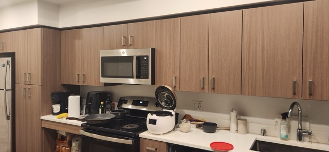
Left image
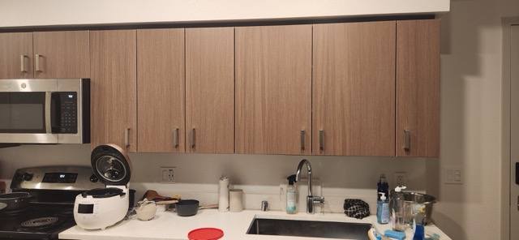
Middle image
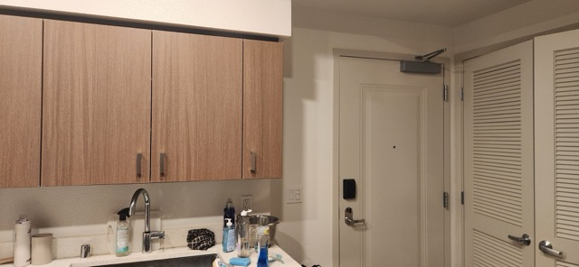
Right image
Kitchen image set with projective transformations (fixed center of projection, rotated camera)
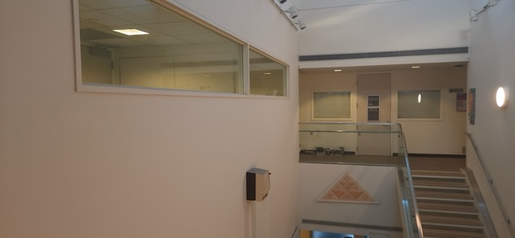
Left image
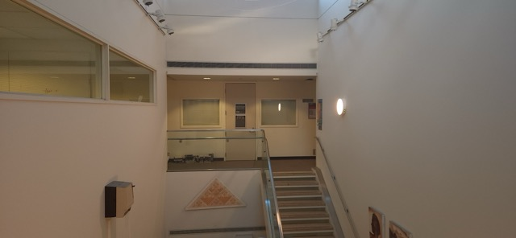
Middle image
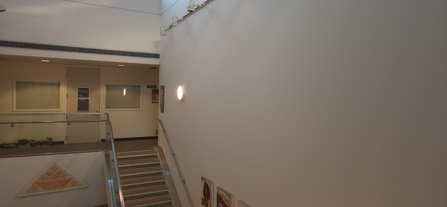
Right image
Soda Hall 7th Floor image set with projective transformations (fixed center of projection, rotated camera)
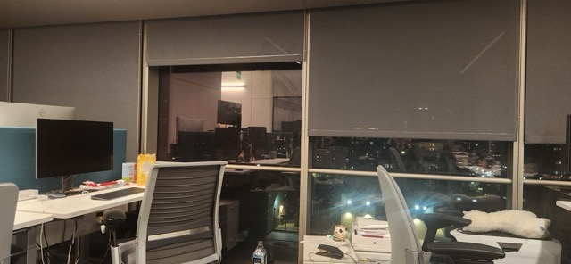
Left image
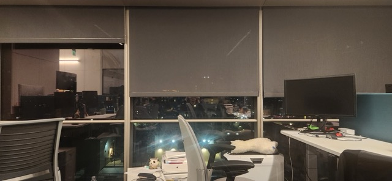
Middle image
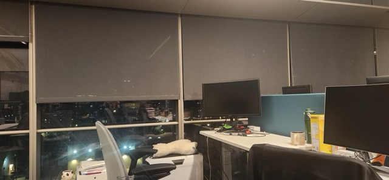
Right image
BAIR image set with projective transformations (fixed center of projection, rotated camera)
Before warping images into alignment, I need to recover the homography transformation parameters between each pair of images. A homography is defined as p' = Hp, where H is a 3×3 matrix with 8 degrees of freedom (the lower right corner is set to 1 as a scaling factor).
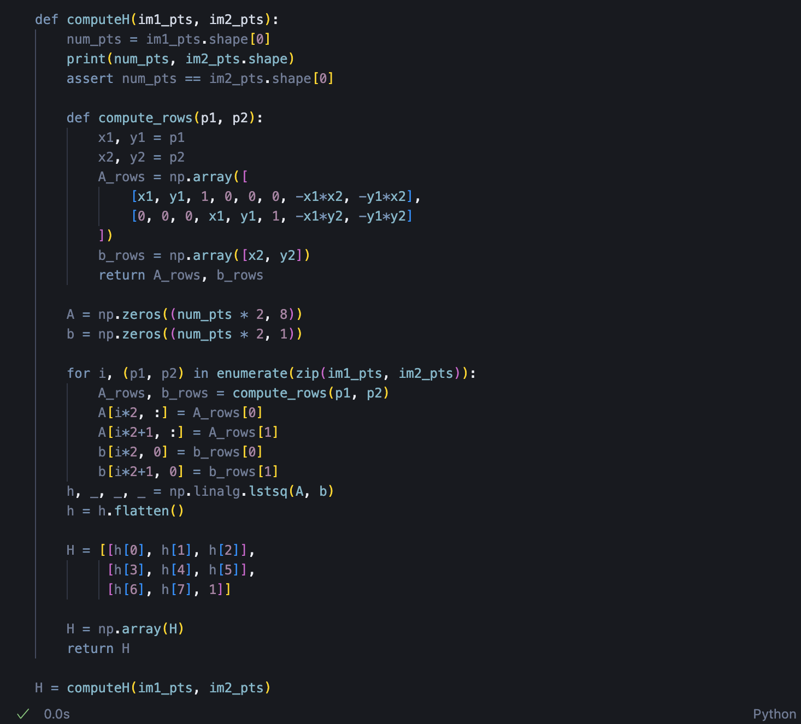
I implemented the computeH(im1_pts, im2_pts) function that takes n-by-2 matrices of corresponding point locations and returns the recovered 3×3 homography matrix H. The function sets up a linear system Ah = b where h contains the 8 unknown entries of H. Since using only 4 points makes the homography recovery unstable, I use more than 4 correspondences to create an overdetermined system, which is solved using least-squares.
I established point correspondences using matplotlib's ginput function to manually select matching points between image pairs. Below are the visualized correspondences for each image set:
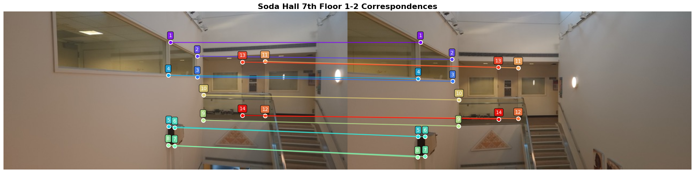
Correspondences 1
For each pair of corresponding points $(x_1, y_1) \rightarrow (x_2, y_2)$, I construct two equations:
$$ \begin{bmatrix} x_1 & y_1 & 1 & 0 & 0 & 0 & -x_2x_1 & -x_2y_1 \\ 0 & 0 & 0 & x_1 & y_1 & 1 & -y_2x_1 & -y_2y_1 \end{bmatrix} \begin{bmatrix} h_{11} \\ h_{12} \\ h_{13} \\ h_{21} \\ h_{22} \\ h_{23} \\ h_{31} \\ h_{32} \end{bmatrix} = \begin{bmatrix} x_2 \\ y_2 \end{bmatrix} $$
With n point correspondences, this creates a 2n × 8 system that is solved using least-squares to find the optimal h vector, which is then reshaped into the 3×3 homography matrix.
H (Image 1 → Image 2):
[[2.132 -0.019 -451.82]
[0.256 1.686 -88.32]
[0.002 -0.000 1.00]]
After recovering the homography matrix, I warp the images to align them with the reference image. I implemented image warping using inverse warping with bilinear interpolation to avoid holes and achieve smooth results.
The warping process consists of the following steps:
The key difference between the two methods lies in the sampling strategy. For nearest neighbor interpolation, I simply round the inverse-warped coordinates to the nearest integer positions. For bilinear interpolation, I compute the four adjacent corner positions (top-left, top-right, bottom-left, bottom-right) by flooring the coordinates, then calculate interpolation weights $w_x$ and $w_y$ based on the fractional parts. The final pixel value is computed as a weighted combination of the four corner pixels.
inv_warped_coords = warp_coords(H_inv, canvas_coords)
x_coords = np.round(inv_warped_coords[:, 0]).astype(int)
y_coords = np.round(inv_warped_coords[:, 1]).astype(int)
canvas[valid] = im1[y_coords[valid], x_coords[valid]]x_left = np.floor(inv_warped_x).astype(int)
y_top = np.floor(inv_warped_y).astype(int)
x_right = x_left + 1
y_bottom = y_top + 1
wx = (inv_warped_x - x_left)[:, None]
wy = (inv_warped_y - y_top)[:, None]
canvas[valid] = (1-wx)*(1-wy)*im1[y_top, x_left] +
wx*(1-wy)*im1[y_top, x_right] +
(1-wx)*wy*im1[y_bottom, x_left] +
wx*wy*im1[y_bottom, x_right]Before proceeding to mosaicing, I tested the homography and warping implementation by performing rectification on images containing known rectangular objects. Rectification transforms a perspective-distorted view of a planar surface into a frontal, rectangular view.
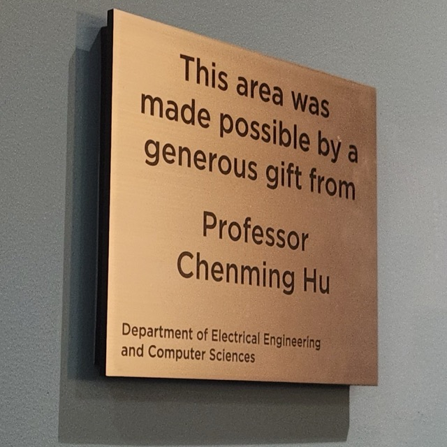
Original image with perspective distortion
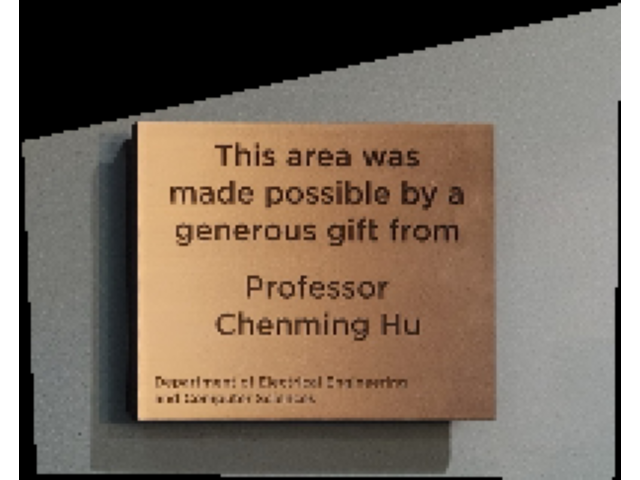
Rectified image - plaque transformed to frontal rectangular view
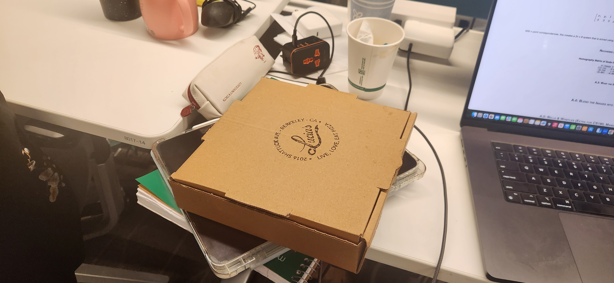
Original image with perspective distortion
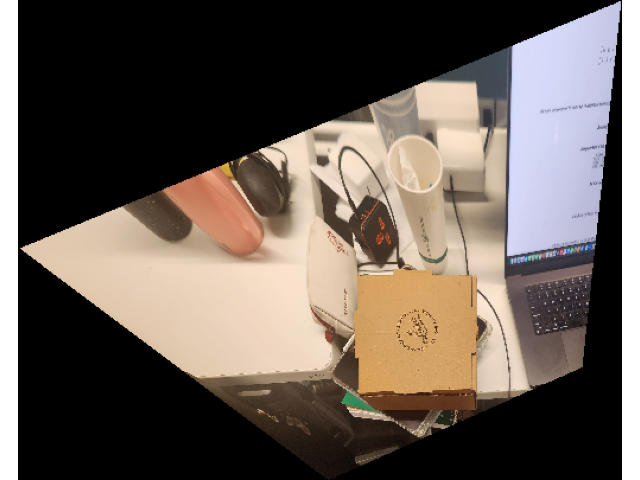
Rectified image - pizza box transformed to frontal rectangular view
For rectification, I manually selected four corners of the rectangular object in the original image and defined corresponding points as a perfect rectangle. The homography computed from these correspondences successfully transforms the distorted planar surface into a frontal, undistorted view.
I used the bilinear interpolation method to warp the image. The bilinear interpolation method is much smoother than the nearest neighbor method. The bilinear interpolation method took 0.001 seconds to warp the image, while the nearest neighbor method took 0.0001 seconds to warp the image.
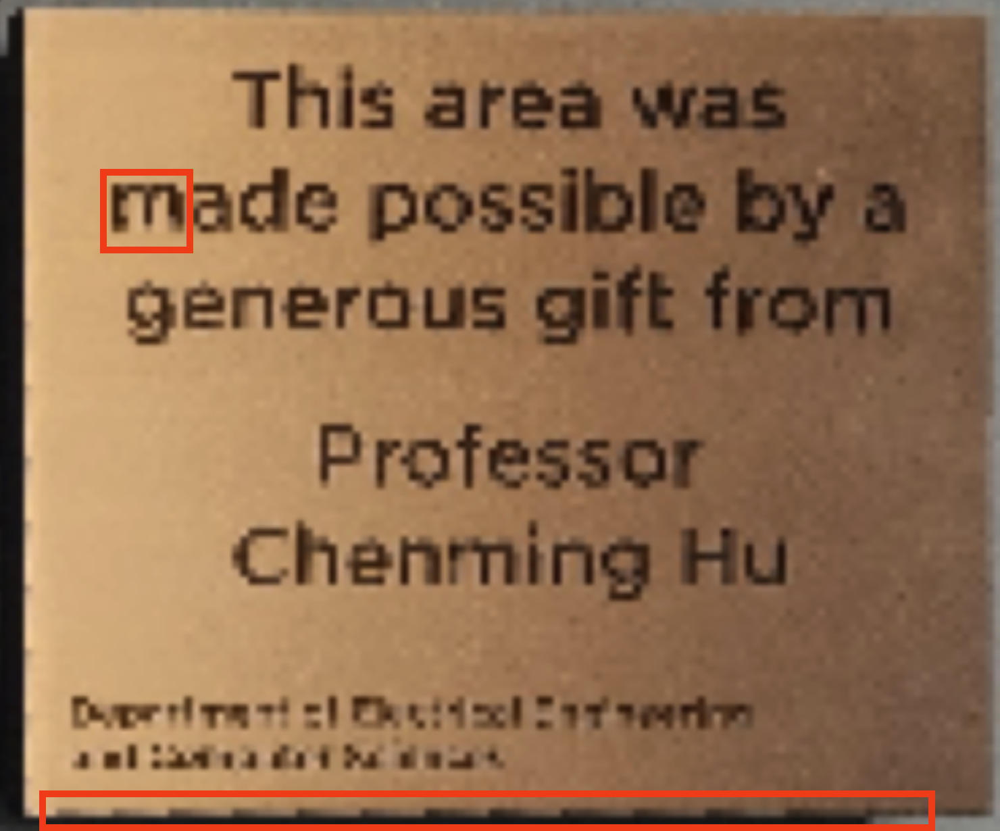
Nearest Neighbor Interpolation (0.01765s)
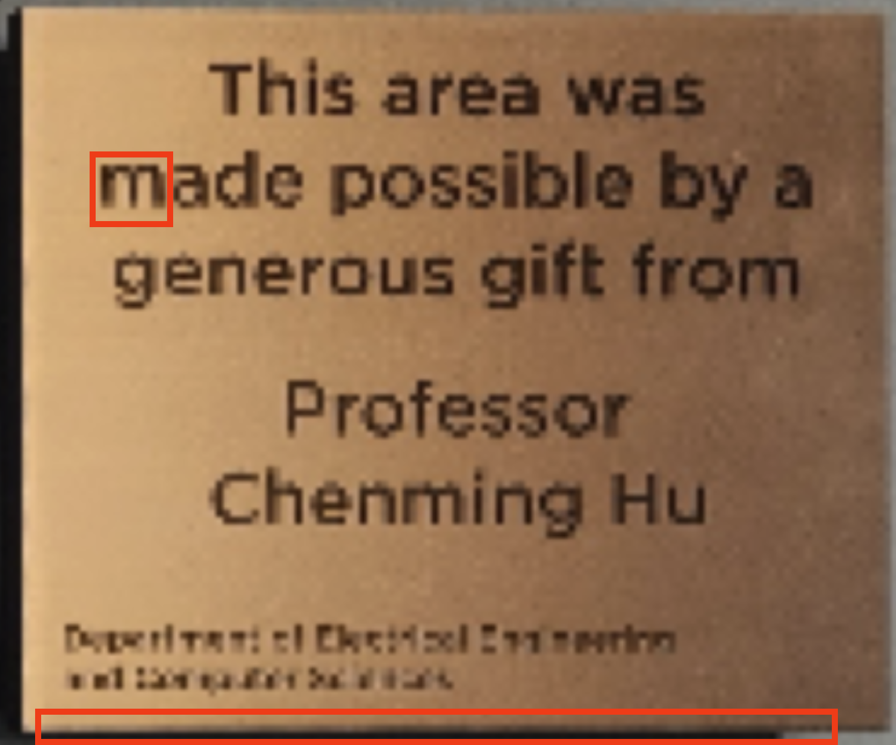
Bilinear Interpolation (0.03341s)
I compared the quality and speed of the nearest neighbor and bilinear interpolation methods. The nearest neighbor method is much faster than the bilinear interpolation method. The nearest neighbor method took 0.01765 seconds to warp the image, while the bilinear interpolation method took 0.03341 seconds to warp the image. However, the bilinear interpolation method produces a much smoother result than the nearest neighbor method, as you can see in the aliasing effect in the nearest neighbor method (compare the red-boxed region).
After warping the images, I blend them together to create a seamless mosaic. I use homography transformations to align the images and apply weighted blending in overlapping regions.
Blending method:
I computed the intersection area of the two images and within the intersection area, I blended the two images horizontally from left to right. So the two images are blended seamlessly and the edges of the two images are not visible. Moreover, I used the sigmoid-based weighted blending instead of naive linear blending to reduce the drastic change near the boundary of the intersection area, especially the upper and lower boundaries.
Left image
Middle image
Right image
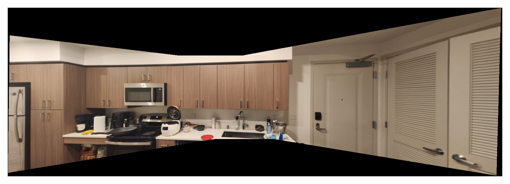
Kitchen panorama created by blending three images with sigmoid-based weighted blending.
Left image
Middle image
Right image
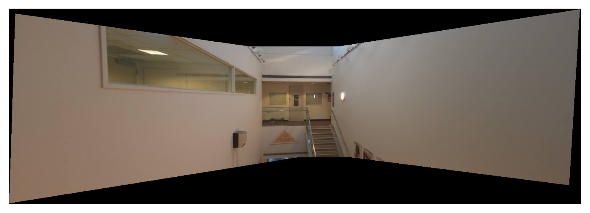
Soda Hall 7th Floor panorama created by blending three images
Left image
Middle image
Right image
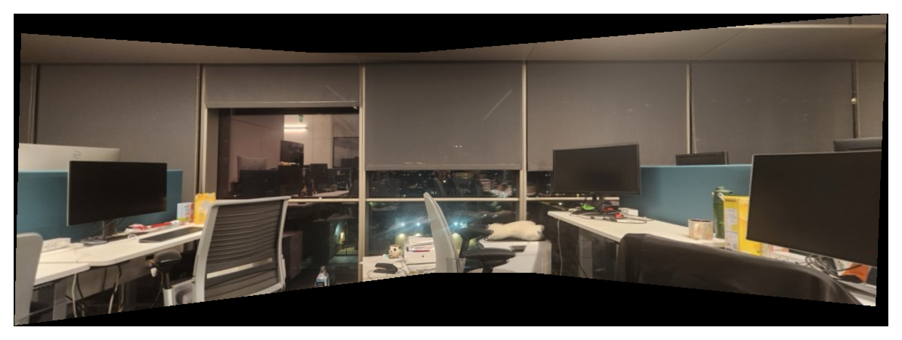
BAIR lab panorama created by blending three images
To reduce distortion at the edges of wide-angle panoramas, I implemented spherical projection as an alternative to planar homography-based stitching. Instead of projecting the mosaic onto a flat plane, the spherical surface better models the camera's rotational motion during capture.
I used inverse warping to achieve optimal resolution by sampling directly from the original pre-warped source images. For each pixel in the output canvas, I compute its corresponding spherical coordinates (longitude $\lambda$ and latitude $\phi$), then project these back to the planar source image coordinates. The inverse homography transformation accounts for the relative camera positions between images. Finally, bilinear interpolation is applied to sample pixel values from the source images. I chose a focal length of $f = 400$ pixels, which provided a good balance between field of view and distortion reduction for the panoramas.
Standard planar homography stitching - notice distortion at the edges
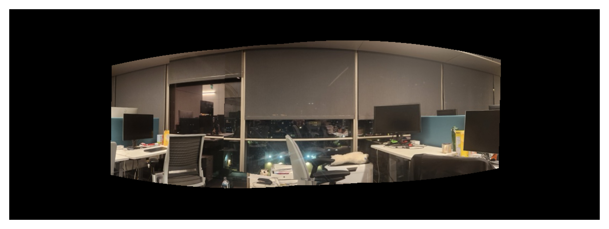
Spherical warping stitching - significantly reduced edge distortion and more natural appearance (linear alpha blending omitted for simplicity)
Observation: The spherical warping method produces panoramas with significantly less distortion at the edges compared to planar homography-based stitching. The spherical projection better preserves the natural appearance of the scene, especially for wide-angle panoramas where edge distortion is more pronounced in planar methods.